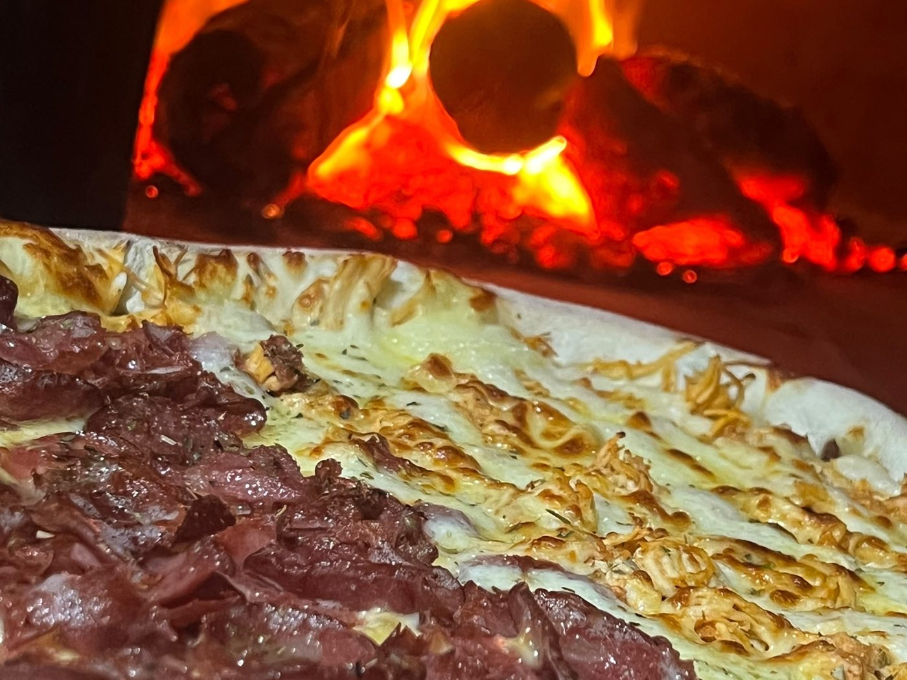
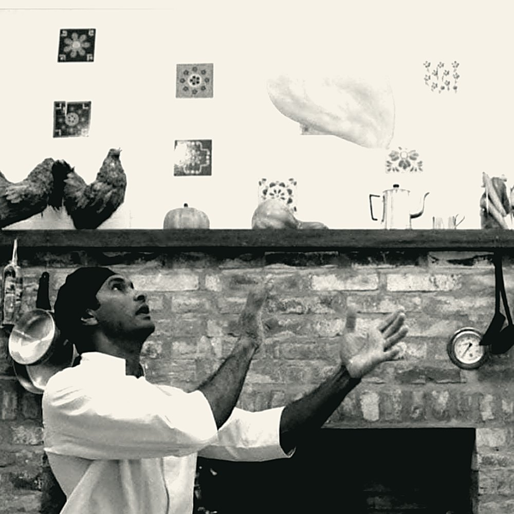
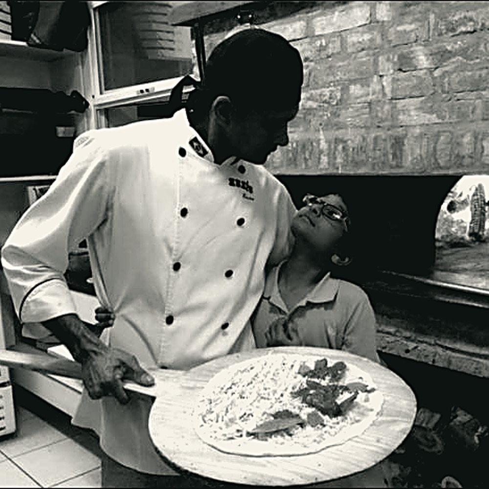
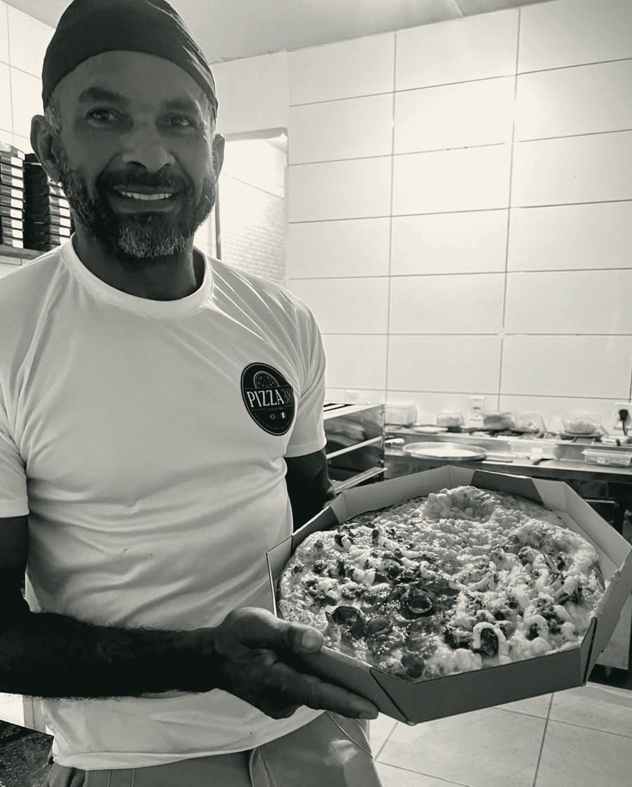

A massa descansa
Farinha, água, sal e fermento. Depois, dois dias de geladeira. É o tempo que deixa a pizza leve.
Desde 1988
A história da casa não tem segredo nenhum — tem repetição. A mesma massa, o mesmo forno, a mesma cidade.
Em 1988, Garopaba tinha menos gente, menos carro e nenhuma pizzaria que entregasse em casa. A Pizza 38 abriu com um forno a lenha, uma bancada e uma massa que precisava de dois dias para ficar pronta.
A cidade mudou. O verão trouxe gente de fora, o inverno levou. A casa continuou abrindo às seis da tarde, acendendo a lenha antes e fazendo uma pizza de cada vez.

Do álbum da casa
O forno é o mesmo destes retratos. Mudou a câmera, mudou a cidade — a massa continua sendo aberta à mão.



Quem faz
Quem abre a casa acende a lenha antes de qualquer outra coisa. Só depois vem a massa, que já descansou dois dias na geladeira, e aí o resto do dia é repetir: abrir, rechear, enfornar, tirar.
Trinta e oito anos assim. É por isso que a pizza sai igual na terça de inverno e no sábado de janeiro — a mesma mão, o mesmo tempo.
A linha do tempo
A casa abre em Garopaba, com forno a lenha e cardápio de uma página.
A pizza começa a sair para entrega. O telefone vira o canal de pedido — e continua sendo por muito tempo.
O verão enche a cidade. A casa aprende a dobrar de tamanho em janeiro e voltar ao normal em março.
Massa de fermentação lenta, forno a lenha e entrega em Garopaba. A receita não mudou; o jeito de pedir, sim.
O que não muda
Farinha, água, sal e fermento. Depois, dois dias de geladeira. É o tempo que deixa a pizza leve.
O forno precisa de horas para chegar na temperatura certa. Quem abre a casa acende o fogo primeiro.
Pizza de forno a lenha assa em poucos minutos e não espera. Sai do forno, vai para a mesa ou para a caixa.